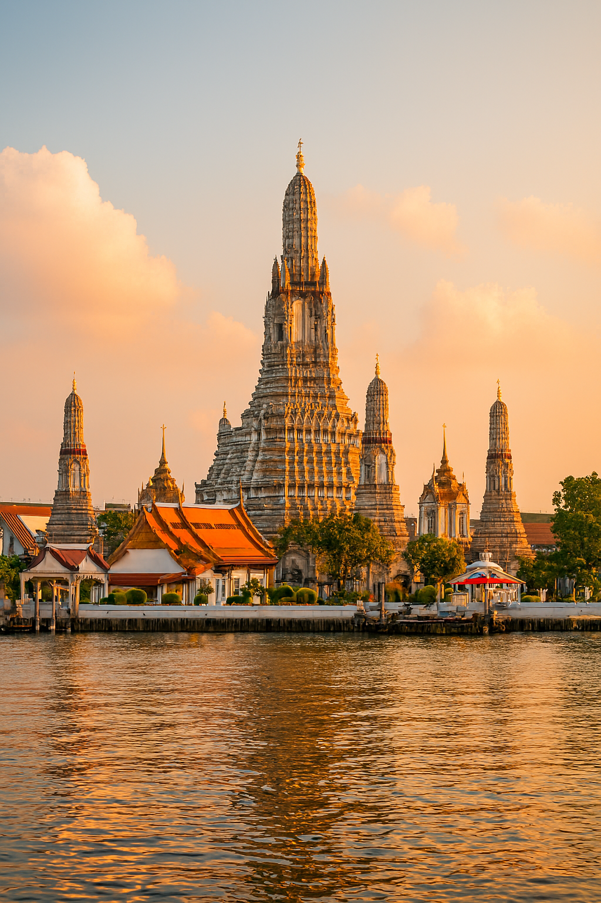
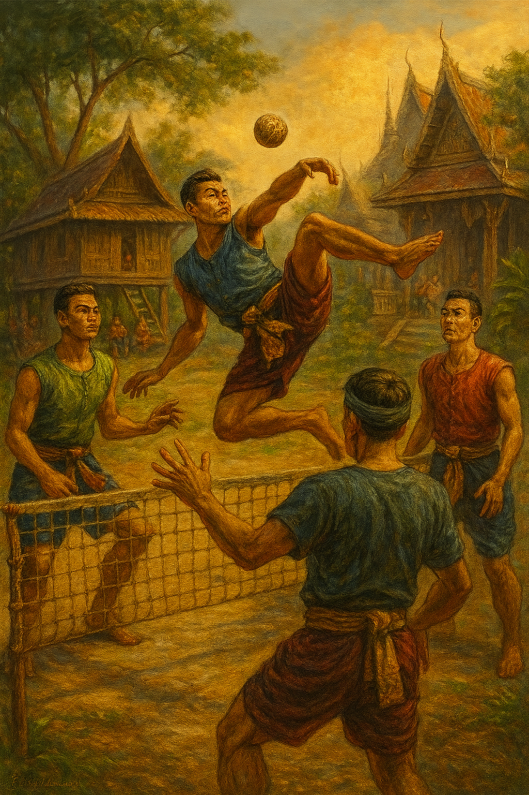

ความสำคัญของศิลปะและวัฒนธรรมไทย
ศิลปะและวัฒนธรรมไทยไม่เพียงแต่เป็นมรดกทางจิตวิญญาณและภูมิปัญญา แต่ยังเป็นพลังสร้างสรรค์ที่เชื่อมโยงอดีต ปัจจุบัน และอนาคต ทำให้คนไทยตระหนักถึงรากเหง้าและสามารถใช้เป็นทุนทางวัฒนธรรมเพื่อพัฒนาประเทศต่อไปได้
กีฬาพื้นบ้าน
กีฬาพื้นบ้านไทยเป็นทั้งการละเล่นเพื่อความสนุกสนานและการสร้างความสัมพันธ์ในชุมชน อีกทั้งยังเป็นมรดกทางวัฒนธรรมที่สะท้อนภูมิปัญญาและวิถีชีวิตของคนไทย ซึ่งควรค่าแก่การอนุรักษ์และเผยแพร่ต่อไป
ศิลปะและวัฒนธรรมไทย
ศิลปะและวัฒนธรรมไทยคือมรดกทางจิตวิญญาณที่หล่อหลอมความเป็นไทย ทั้งในด้านความงาม ความเชื่อ และความสัมพันธ์ในสังคม ซึ่งควรค่าแก่การอนุรักษ์และเผยแพร่ให้คนรุ่นใหม่ได้ภาคภูมิใจและสืบสานต่อไป